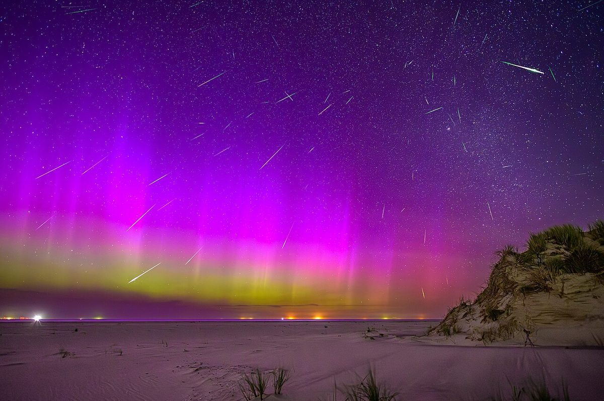
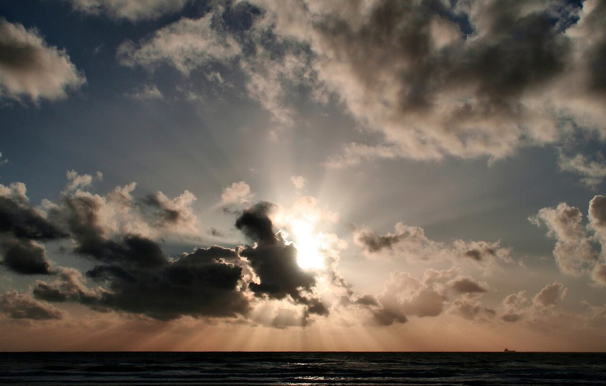

屋号のこと
屋号のこと
お店について確認できているのは、所在地とInstagramのアカウントだけです。
確認できていること
- 店名は「雨ときどき月」、業種はパン屋
- 所在地は愛媛県西条市神拝甲甲201-10
- 電話番号はなし。連絡はInstagramから
- 営業時間・定休日・メニュー・価格・ご予約・駐車場は準備中

制作側の連想
「雨ときどき月」を読む
屋号の由来は分かりません。以下は制作側が屋号の響きから思いついたことで、お店の理念・由来とは無関係です。
- 天気予報の文として「雨ときどき月」は、雨と月が入れかわる空模様のようにも読めます。このサイトの配色は、雨雲の灰青と月の黄色にしました。
- 空を見上げる時間として雨のあいだに雲が切れて、月がのぞく。そんな瞬間を、写真の「雲間の光」で表しています。


土地について
西条市のこと
西条市は「水の都」と言われることがあるそうです。ただし、お店との関係は不明です。このサイトでは、水や川にまつわる写真や表現を、お店の特徴として使っていません。